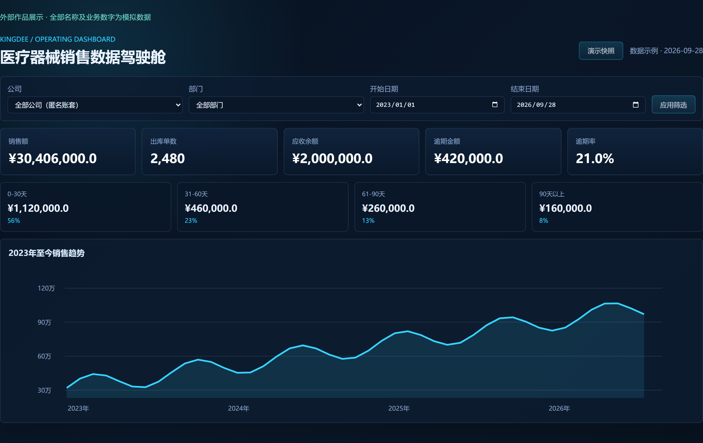
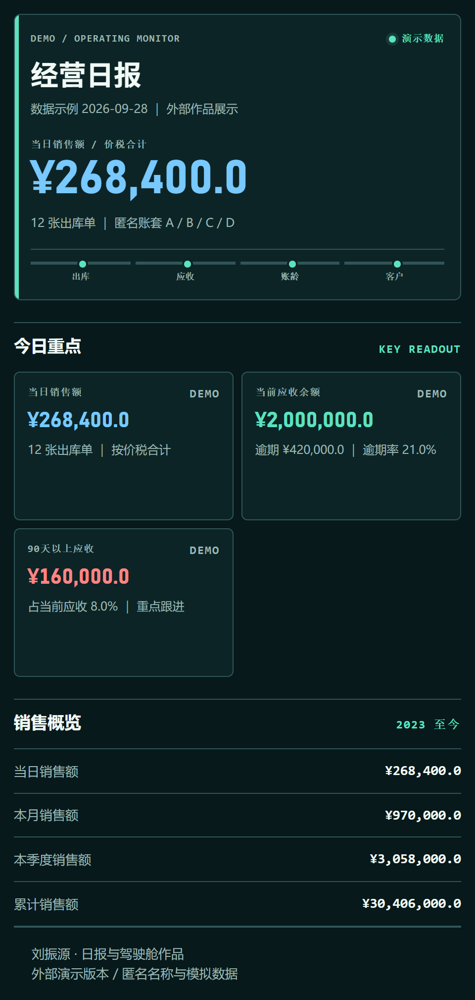

01
读取业务数据
连接金蝶接口，按账套采集销售出库、退货和应收相关数据。
金蝶数据整合、销售与应收分析、移动日报自动生成。一个连接业务数据与管理决策的数字化项目。
匿名演示版本 · 界面中的名称、金额与单据数量均为模拟数据


DESKTOP DASHBOARD + MOBILE REPORT将分散的数据提取、核对、整理与发送，组织为一条可重复运行的业务流程。
连接金蝶接口，按账套采集销售出库、退货和应收相关数据。
处理部门归属、内部往来及客户合并规则，核对明细与汇总。
组织销售趋势、部门排行、账龄结构与重点客户应收。
生成适配移动阅读的报告，完成发送记录与重复发送检查。
先看销售与应收全局，再下钻到部门和客户。以下为原项目界面结构的匿名演示截图。
将完整日报按业务主题切成5张图片，方便在招聘聊天、微信或邮件中分享。
作品页仅展示界面与项目方法，不连接企业生产系统。演示数据不代表任何公司的实际经营情况。
区分销售、退货、应收和账龄；落实客户及部门归属，避免只有图表、缺少一致统计口径。
围绕数据获取、校验、报告生成与交付组织自动化，减少反复导出、整理与逐一发送。
桌面驾驶舱适合看整体结构；移动日报突出当日重点、客户明细与风险跟进。
保留采集与核对记录，检查报告数据和发送状态，支持后续问题定位与维护。